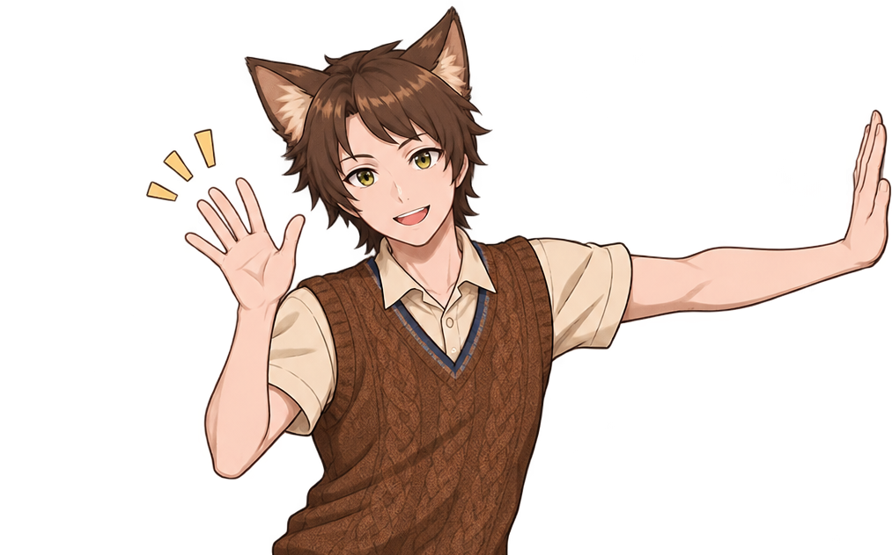

Kattso · projet VTuber en construction
Un peu sauvage.
Toujours sincère.
La tanière est entrouverte. Entre jeux, café et rencontres à son rythme, Kattso t'invite à découvrir son univers.
Un coin tranquille pour les curieux, les joueurs et les chats de passage.

Chat de tanière
en voie de sociabilisation
en voie de sociabilisation
LE REFUGE DE KATTSO01 — 05
Ravensvault présente
Une porte ouverte,
à son propre rythme.
Kattso aime le calme, les longues sessions de jeu et les soirées qui s'étirent. Il n'a pas soudainement cessé d'être un ermite — il a simplement décidé de laisser un peu plus de place aux rencontres.
Lire son histoireAprès tout, même les chats finissent parfois par apprécier la compagnie.
— Kattso

On garde le contact ?
La suite se construit
petit à petit.
Les réseaux officiels sont ouverts et les projets prennent forme tranquillement. Pour tout échange direct, la porte du courrier est déjà là.
Écrire à Kattso